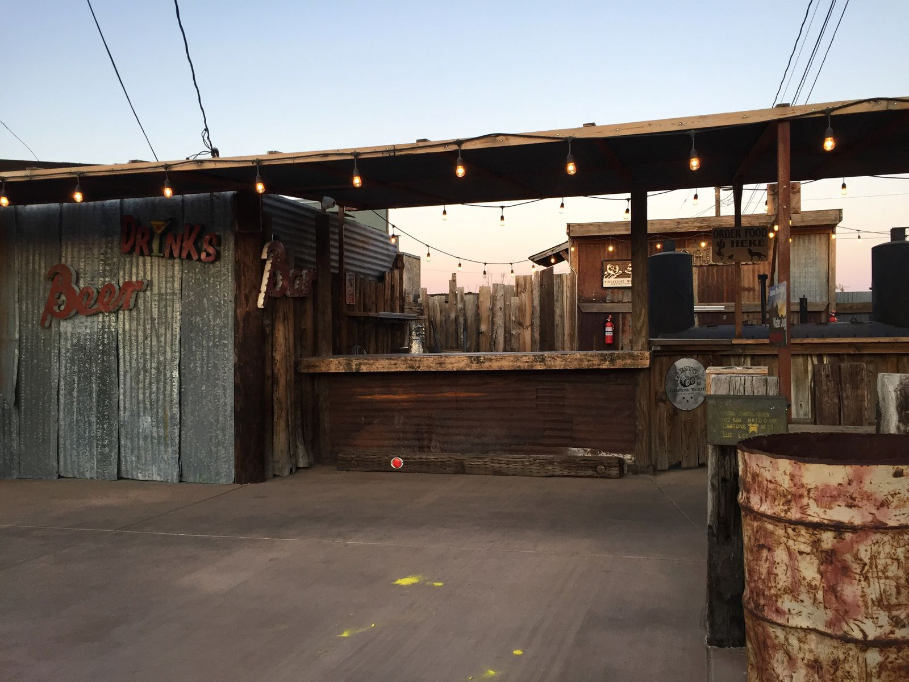
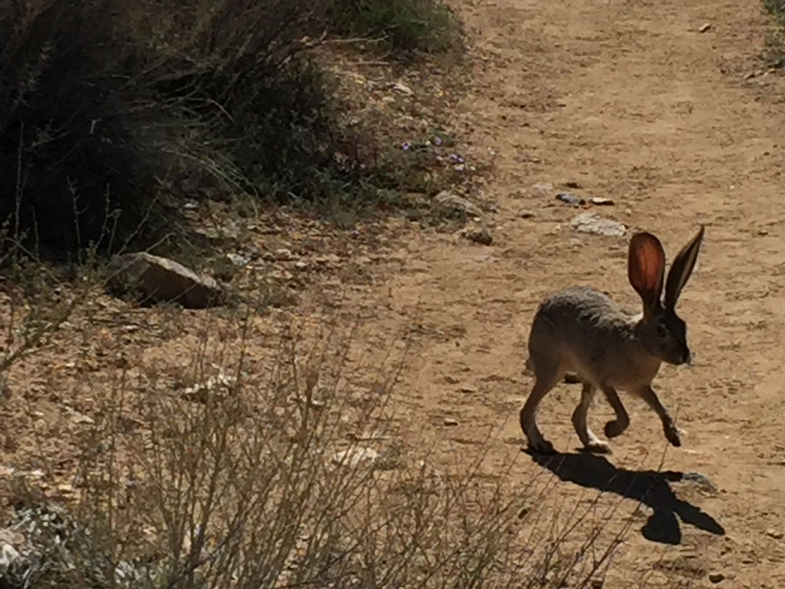
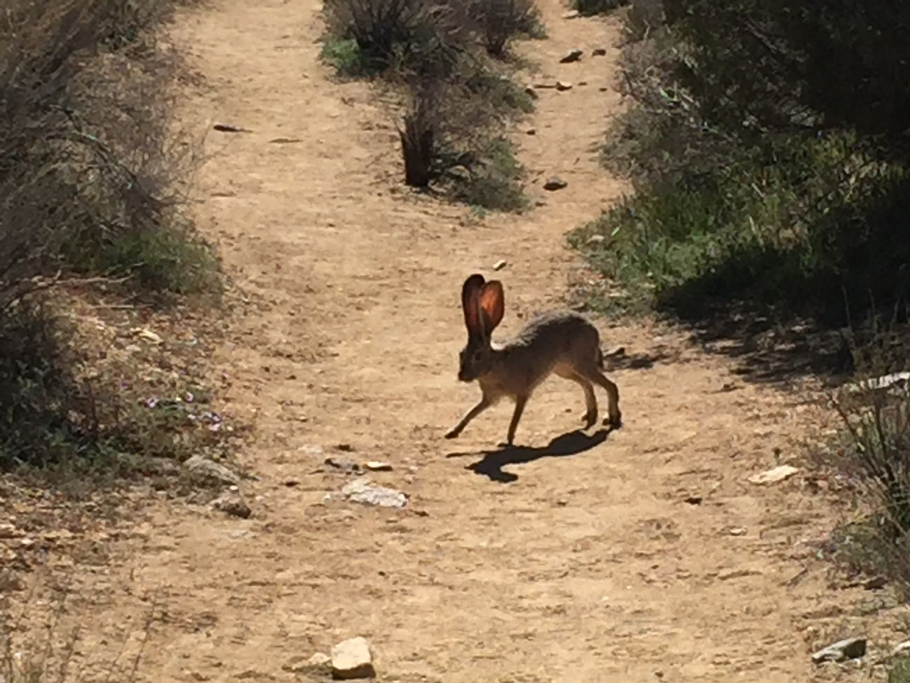
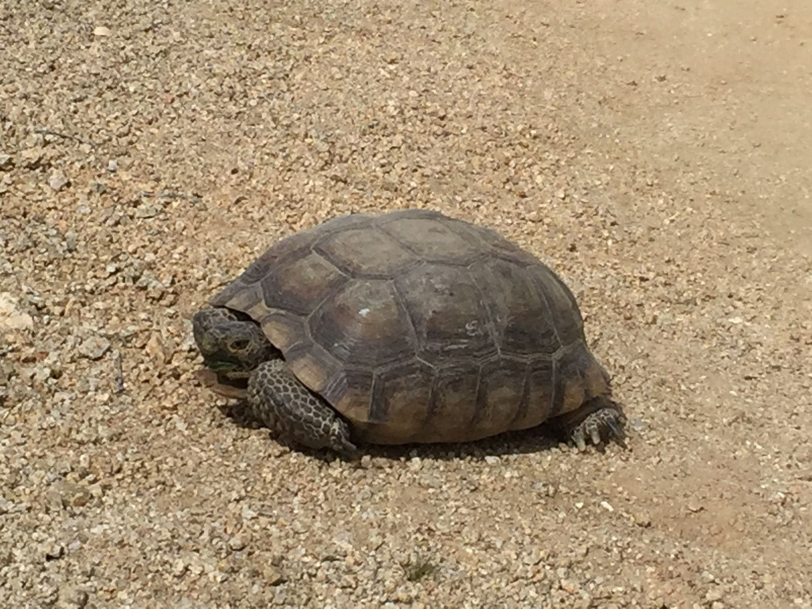
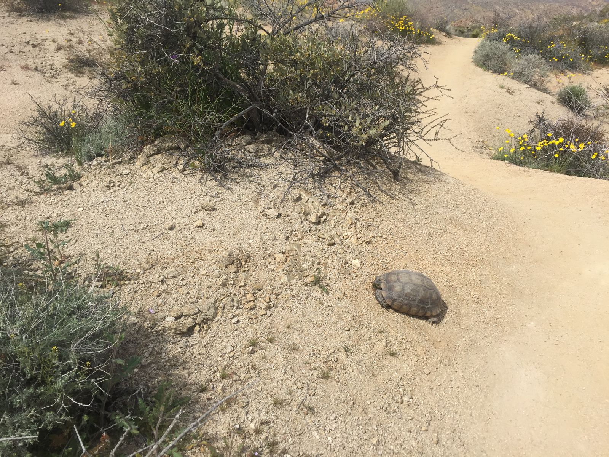
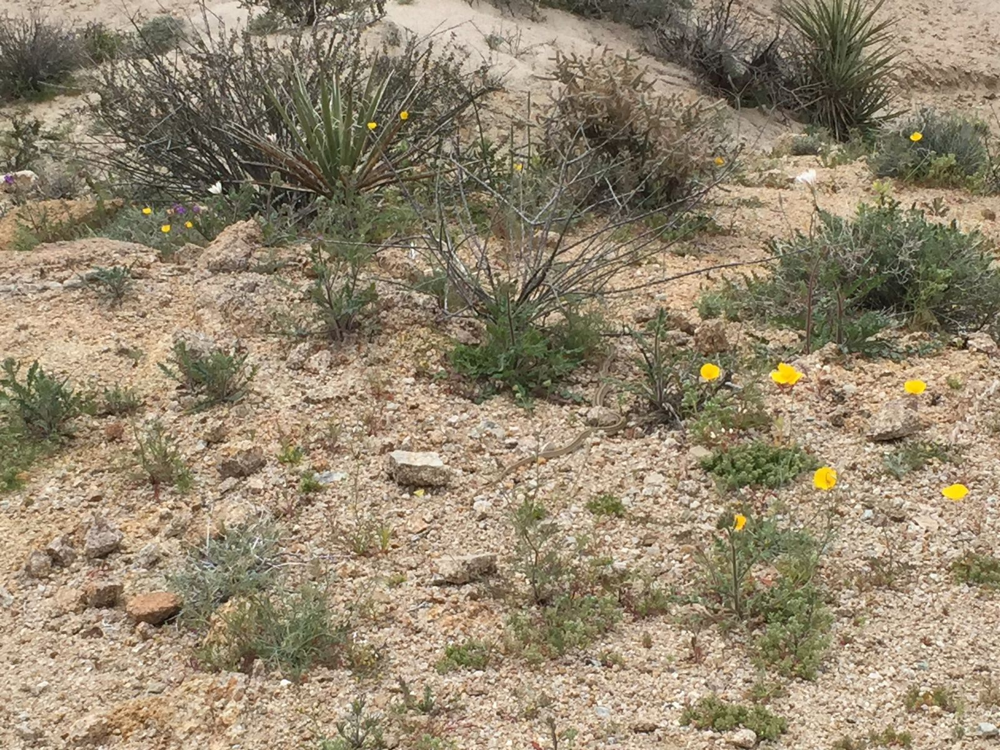
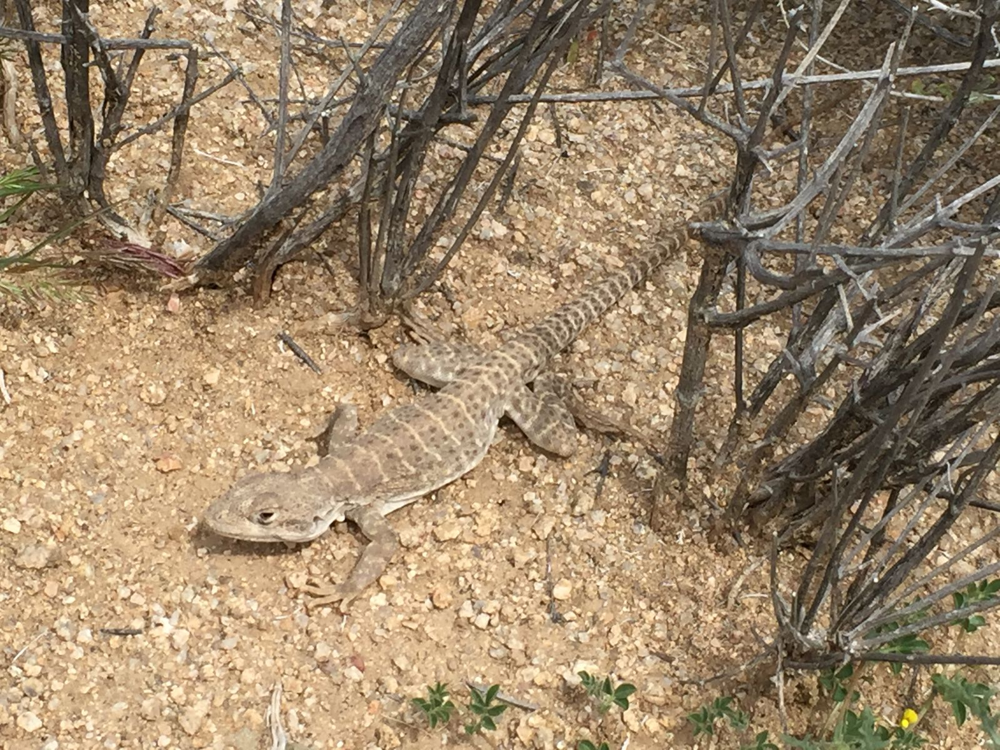
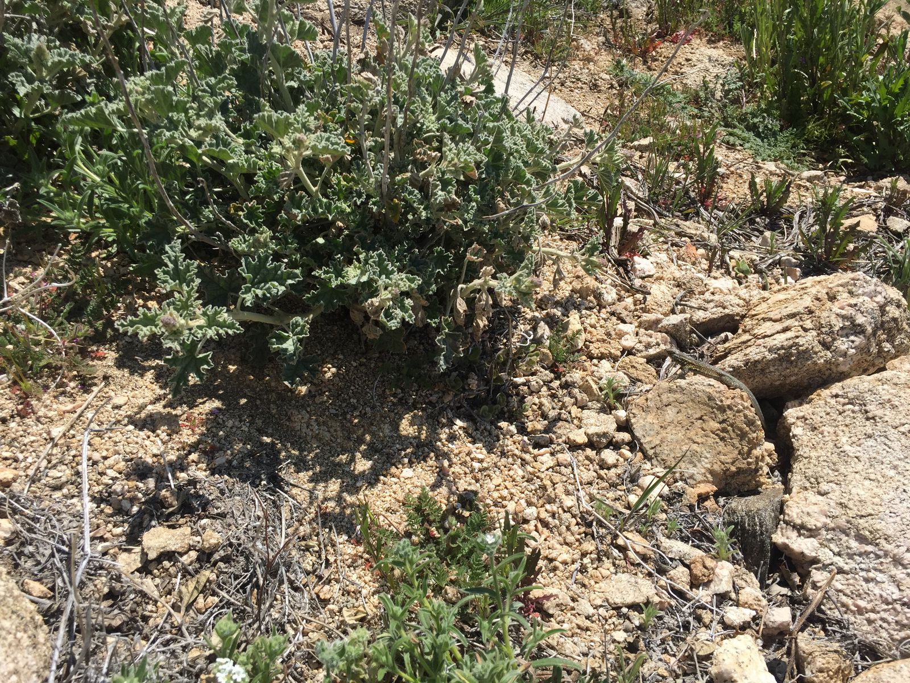
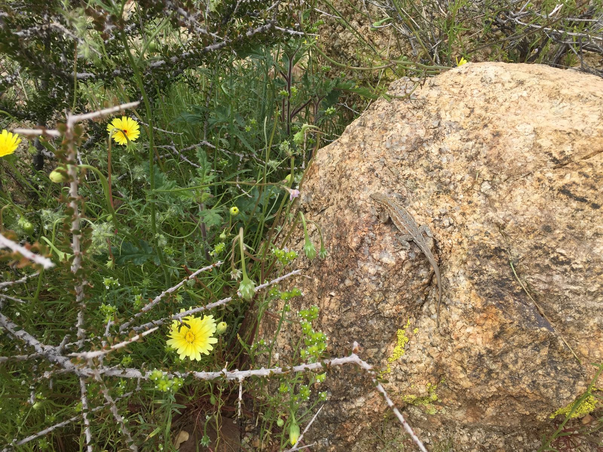
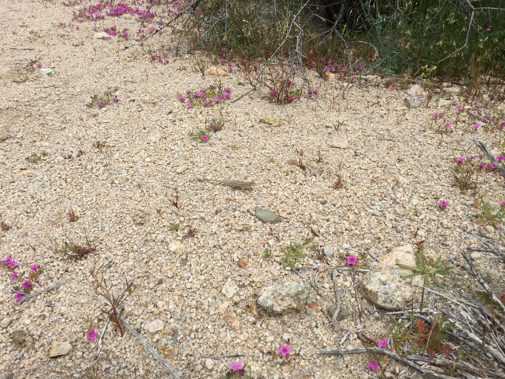

New Friends at Joshua Tree
Joshua Tree has a saloon. Yes, a saloon. It was the most crowded place in the very small town—about an hour to get a table or ten minutes to even get the bartender's attention. The menu is pretty diverse and on the weekends they have dancing and a bar outside.
While waiting in line at the bar, someone identified my Brass Rat and asked whether I went to MIT. When I said that I did, she said that she used to live in Somerville and just moved to San Diego. The person waiting behind me in line at the bar said, "I also live in Somerville and I went to MIT for grad school." And the response from the first person was "Wait, you two don't know each other?!"
Such a small world that three Somervillians, two of which went to MIT, all happened to be at the same bar at the same restaurant in the same small town of Joshua Tree at the same time.

Of course, I didn't actually become friends with these people. I got my margarita and carried on with my night. My real friends are all the animals I met on the trail at Joshua Tree. You might have already seen my BUN ALERT, but there are more.
This Desert Black-tailed Jackrabbit was spotted on the Lost Horse Mine trail. We became fast friends and then the bun ran away.


Moving onto reptile, this Mojave Desert Tortoise was blocking the path on the Lost Palms Oasis Trail. The tortoise was very afraid of people, so I had to wait silently for a few minutes before it came out of its shell.


This snake terrified my mother, but I was mostly disappointed that I couldn't get a good picture before it slithered away. That snake wanted nothing to do with humans.

Last but not least, I befriended many Lizards. I named them all Lizzie. I found them all over the park.




A few friends I couldn't get a picture of because they were too fast. Peter Parker the spider lives just outside the basement door to the laundry at the Airbnb. When I went to get out my phone, Peter had disappeared, so I bolted inside. I also spotted a very fast Kit Fox in Black Rock Canyon. It was too fast and too far away to get a photo.